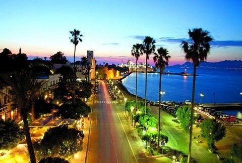

Η πόλη της Κω
Η Κως είναι η μεγαλύτερη πόλη στο νησί Κως και έδρα της Περιφερειακής Ενότητας Κω. Είναι χτισμένη στο ανατολικό άκρο του νησιού, στο μύχο του κόλπου της Κω. Σύμφωνα με την απογραφή του 2011 έχει 19.432 κατοίκους και είναι η δεύτερη μεγαλύτερη πόλη στην Περιφέρεια νοτίου Αιγαίου μετά τη Ρόδο. Αποτελεί σημαντικό εμπορικό, οικονομικό και τουριστικό κέντρο. Η θέση που βρίσκεται η πόλη της Κω κατοικείται συνεχώς από την 3η χιλιετία π.Χ.. Η πόλη ιδρύθηκε στη σημερινή της θέση το 366 π.Χ. και αποτελεί ουσιαστικά επέκταση της προηγούμενης πόλης. Η πόλη γνώρισε την μεγαλύτερη άνθισή της κατά τα αρχαία και ρωμαϊκά χρόνια. Η πόλη χτίστηκε ξανά με σύγχρονο πολεοδομικό σχέδιο και πλατείς ασφαλτοστρωμένους δρόμους μετά το σεισμό του 1933, ο οποίος κατέστρεψε σχεδόν ολοκληρωτικά την πόλη εκτός από το τμήμα της πόλης κοντά στο λιμάνι. Σημαντικά αξιοθέατα της πόλης είναι τα ερείπια της αρχαίας πόλης, το μεσαιωνικό κάστρο των Ιπποτών, ο πλάτανος του Ιπποκράτη και το Ασκληπιείο της Κω, τέσσερα χιλιόμετρα νοτιοδυτικά της πόλης.